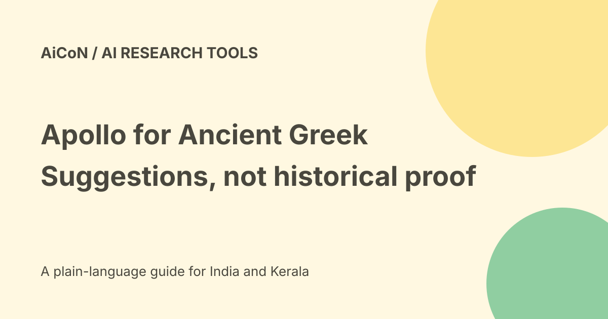

Apollo for Ancient Greek: restoration suggestions and limits
The Austrian Academy of Sciences announced Apollo on 23 September 2026, developed with Mistral AI and SAIL Reply. It describes a foundation language model for Ancient Greek that suggests text to fill gaps. A plausible restoration is a research hypothesis, not proof of what a damaged ancient document originally said.

What Apollo does
The Academy describes entering an incomplete ancient text into an interface and receiving suggested completions for researchers to review.
That is distinct from scanning a manuscript, reading every damaged image or establishing a historical fact. The announced workflow uses text fragments and expert judgement.
The source and public application
The official release links to an Apollo application and calls it freely accessible open access. The fetched application page is branded ScholarLLM Workspace and names Apollo.
We did not submit a fragment, create an account or test the result. Public page access does not establish unlimited inference, a service guarantee or every possible account feature.
Reported evaluation results
The Academy says Apollo trained on about 600 million Ancient Greek words. It reports roughly 80% accuracy for deliberately masked passages of known original texts.
For genuinely unknown gaps, it says experts in a blind study judged the restorations at least as good as human completions in 77% of cases, and better in 16-20% of cases.
These are different evaluation settings. A known hidden passage can be compared with an answer; an unknown gap has no complete original to check. Do not combine the percentages into one accuracy guarantee.
Restoration is not a quotation
Keep the surviving text, your transcription and the model's proposed completion separate. Mark the missing section and preserve uncertainty in any publication.
A fluent completion can contain a wrong name, date or legal term. Do not quote it as recovered historical evidence without a reasoned scholarly assessment.
A careful first use
- Open the Academy's source and follow its application link.
- Use a public fragment you have permission to process.
- Keep an unchanged copy of the transcription.
- Mark gaps as required by the actual interface.
- Review more than one plausible completion where available.
- Check grammar, period vocabulary and document context.
- Compare with known parallels and expert work.
- Record the model and date alongside the suggestion.
- Label any accepted supplement as a restoration, not surviving text.
Human expertise still matters
The Academy explicitly says Apollo cannot replace human experts. Palaeography, archaeology, chronology and the physical document can constrain possible answers in ways a text-only model may miss.
A fast proposal can save exploration time, but final scholarly responsibility remains with the researcher.
Ancient Greek is not every language
The announcement concerns Ancient Greek. It says Latin work is planned for the future, with a larger source corpus.
Do not infer a current Latin model, Modern Greek performance or Malayalam support from that plan. This is a specialist research tool rather than a general Indian-language assistant.
Free, licence and India boundaries
The Academy calls the application free and open access. This guide did not verify a complete code or weights licence for independent redistribution or commercial hosting.
Open access to a website is not automatically an open-source licence. No India account, quota, local processing or SLA was established, and no paid tariff is invented.
Research data and privacy
Unpublished transcriptions can be confidential or subject to archive restrictions. A publicly funded application is not permission to upload another scholar's unpublished work.
Check terms and handling of submitted material. We did not establish exact retention or training controls for personal application use.
What changed since the original post?
We preserve the official restoration claim, explain the two evaluation settings and separate free application access from licensing and historical certainty.
Frequently asked questions
Does Apollo prove a missing sentence?
No. It proposes a completion for review.
Is Latin support already established?
The checked release describes future work.
Was a fragment submitted?
No.
Sources: Official Academy announcement · Officially linked application. Checked 7 October 2026.